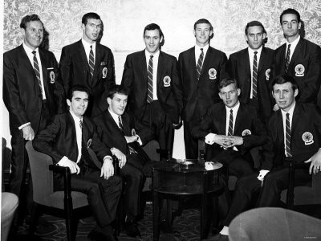

Chương 6

ướng đến những đỉnh cao mới, cuối mùa 1965-1966, Alex Ferguson đề đạt nguyện vọng được rời Dunfermline, song Willie Cunningham thành công trong việc thuyết phục anh ở lại giúp đội thêm một năm, với mức lương tăng từ 28 lên 40 bảng một tuần.Alex mùa 1966-1967 không còn bùng nổ như trước, nhưng vẫn 29 lần phá lưới đối phương, đứng đầu danh sách ghi bàn của CLB. Phong độ tốt khiến anh có tên trong danh sách dự phòng của ĐTQG Scotland trước trận giao hữu gặp Anh: Nếu siêu sao Denis Law không đủ thể lực thi đấu vì chấn thương, Alex sẽ được gọi vào thay thế. Song rốt cuộc, Law không những đủ thể lực, mà còn tỏa sáng giúp Scotland chiến thắng 3-2.
Hè 1967, Alex lại có tên trong danh sách đội tuyển Scotland đi vòng quanh thế giới du đấu năm tuần.Trớ trêu thay, số phận dường như không muốn cho anh được đại diện màu cờ sắc áo quê hương.Trước chuyến du đấu, bốn CLB Celtic, Rangers, Leeds và Manchester United lần lượt rút hết cầu thủ của họ về. Thiếu vắng trụ cột từ các CLB trên, đội Scotland “đem chuông đi đánh xứ người” chỉ còn là một đội hình B, không được công nhận là ĐTQG đích thực.Các cầu thủ được dẫn dắt bởi HLV Bobby Brown, “cố nhân” của Alex tại St Johnstone.
Chuyến du đấu năm ấy đầy rẫy sóng gió. Điểm đến đầu tiên của Scotland là Israel, một trong những địa điểm “nóng” nhất hoàn cầu, nơi chiến tranh lúc nào cũng chực chờ phát tác. Tại Tel Aviv, Scotland vượt qua tuyển QG Israel với tỷ số 2-1, trong trận đấu mà ngôi sao của đội chủ nhà Mordecai Spiegler (sau này nổi tiếng ở Anh trong màu áo West Ham) trúng phải độc chiêu “Cùi Chỏ Dao Lam”, bị gãy mũi phải rời sân. Theo lịch trình, Scotland và Israel sẽ tái đấu thêm một trận, song vài ngày trước khi trận đấu diễn ra, cuộc chiến Israel- Ả Rập bùng nổ. Hôm đó, khi Alex và đồng đội đang ngồi thư giãn trong khách sạn ở đất thánh Jerusalem, đạn pháo bỗng nổ tưng bừng. Toàn đội vội vàng lên xe, trở lại Tel Aviv. Suốt dọc đường đi, họ thấy từng cụm khói bốc lên cao ngất nơi những ngọn đồi, và bị tra tấn bởi tiếng gầm rú cửa từng đàn chiến đấu cơ xuất kích phía trên đầu.Về đến nơi, họ nhận được thông báo phải tạm ở lại khách sạn, vì chiến sự đang quá quyết liệt, không phi cơ dân sự nào được phép cất cánh.May thay, ngày hôm sau, tình hình dịu bớt, các chàng trai của chúng ta lên được máy bay, rời Israel hướng đích Hong Kong.
Tưởng thoát nạn, biết đâu tránh vỏ dưa gặp phải vỏ dừa. Vừa đặt chân đến sân bay quốc tế Hong Kong, tuyển Scotland giật thót cả mình, vì khắp phi trường đầy rẫy lính tráng, lính nào cũng vũ trang tận răng. Thì ra lúc ấy đang là đỉnh cao của phong trào cách mạng văn hóa ở Trung Hoa Đại Lục, và phong trào lan đến tận Hong Kong. Một số nhóm sinh viên cánh tả ở đảo này cũng tập tành làm “Hồng Vệ Binh”, đổ ra đường biểu tình, gây rối khắp nơi, khiến chính quyền phải tăng cường an ninh tới mức tối đa. HLV Bobby Brown lập tức triệu tập đội, thông báo quyết định chỉ thi đấu giao hữu duy nhất một trận, thay vì hai như dự kiến, đồng thời cấm các cầu thủ không được rời khách sạn mà không xin phép. Cứ tưởng chỉ tập trung đá bóng thôi thì không sao, chẳng ngờ hôm sau, trong buổi tập của Scotland, bọn sinh viên cánh tả lại kéo đến bao vây SVĐ, trưng biểu ngữ ca ngợi Mao Trạch Đông, kêu gọi lũ cầu thủ đến từ đất nước tư bản xấu xa mau…cuốn xéo. Tuy thế, “lũ cầu thủ” vẫn phải tôn trọng hợp đồng, ở lại đá giao hữu cho xong. Kết quả: Scotland – Hong Kong 4-1.Kết thúc trận đấu, toàn đội trở về khách sạn, tụ tập đánh bài, và bật radio, háo hức theo dõi tin tức trận đấu lớn nhất mùa giải: Chung kết cúp C1 giữa Inter Milan và Celtic Glasgow ở Lisbon.
Dưới bàn tay phù thủy của cựu HLV St Johnstone, Jock Stein, Celtic Glasgow thực hiện bước chuyển mình ngoạn mục. Từ 1938 đến 1965, Celtic hoàn toàn bị Rangers phủ bóng, chỉ giành được duy nhất một chức VĐQG.Stein đến Celtic năm 1965, thì chỉ một năm sau, đội lên ngôi quán quân. Đến thời điểm hiện tại của năm 1967, họ đã giành cú đúp, và đang chờ nốt Cúp C1 để trở thành CLB đầu tiên trong lịch sử hoàn tất cú ăn ba: Cúp C1, VĐQG, và Cúp QG.Tuy vậy, chẳng ai đặt niềm tin vào Celtic. Họ đúng là ông lớn ở Scotland đấy, nhưng chưa hề có thành tích gì trên đấu trường châu Âu, trong khi Inter Milan là nhà vô địch C1 hai năm liên tiếp 1964-1965. Hơn thế nữa, trong khi đội hình Inter bao gồm những ngôi sao lớn đến từ khắp nơi trên nước Ý, 11 cầu thủ đá chính của Celtic tất cả đều sinh trưởng tại khu vực Glasgow. Tập hợp tất cả nhân tài Scotland lại, chưa chắc giành nổi Cúp C1, không lẽ có thể vô địch chỉ với cầu thủ từ Glasgow?Có viển vông quá chăng?
Có! Đó là nhận định chung của các cầu thủ Scotland tại Hong Kong, cách Lisbon 7000 dặm. Toàn đội, trừ Harry Thomson, đều ủng hộ đội bóng quê hương, nhưng không dám tin Inter sẽ xẩy chân.Tuy vậy, khi tổ chức cá độ với nhau, chỉ duy một mình Thomson bắt Inter, những người còn lại đều liên thủ với nhau bắt Celtic.
Ở đây cần phải mở ngoặc ghi chú thêm đôi điều về Harry Thomson.Mang trong mình 2 dòng máu Anh-Scotland[1], tuy Thomson chơi cho Scotland, nhưng tự cho mình là người Anh.Đi đến đâu, anh ta dè bỉu Scotland đến đấy.Đồng đội của Thomson liên thủ bắt Celtic, chẳng qua chỉ vì quá ghét anh ta mà thôi, chứ nếu bắt độ với người khác, họ cũng chọn Inter.
Khi radio loan báo kết quả hiệp một: Inter 1-Celtic 0, Thomson nhẫy cẫng lên, còn Alex thở dài: Thế là xong, một khi Inter đã dẫn trước, họ sẽ lui về đổ bê tông, làm sao mà xuyên phá cho nổi? Thôi thì cũng mừng cho sư phụ Jock Stein, vào được chung kết đã là kỳ tích rồi.
Thôi thì…đánh bài tiếp…
45 phút trôi qua…
Radio lại loan báo tin tức mới nhất “Glasgow Celtic đã trở thành đội bóng đầu tiên của Đại Anh Quốc giành chức vô địch châu Âu”!
Harry Thomson ngồi trơ như phỗng.Tất cả cầu thủ còn lại đồng loạt ném bài vào mặt anh ta, rồi ôm nhau nhảy múa, hát ca vang trời.
Ngày hôm sau, Thomson phải vét sạch túi, thậm chí sang vay “nóng” thư ký liên đoàn bóng đá Scotland để trả tiền thua độ…
Điểm dừng chân kế tiếp của Scotland là Australia và New Zealand.Ở Australia, Alex có dịp lần đầu gặp gỡ ông chú Alexander Chapman, người từ lâu đã định cư nơi xứ sở chuột túi.Bạn có thắc mắc tại sao tên Alex và ông chú lại giống hệt nhau không? Chính bởi vì Alex được đặt tên theo tên của ông chú này. Sau 5 trận toàn thắng ở châu Đại Dương, đoàn “lê dương” lại lên máy bay, bay một mạch 14 tiếng tới quá cảnh tại Los Angeles, trước khi vào Vancouver, Canada. Họ đến Los Angeles đúng lúc binh lính Mỹ đang được chuyển vận sang chiến trường Việt Nam, nên phải đợi vạ vật tại phi trường 10 tiếng đồng hồ, cho đến khi quân lính đi hết, mới được khởi hành bay sang Canada. Scotland kết thúc chuyến du đấu bằng 2 trận thắng: 4-1 trước hội tuyển Vancouver, và 7-2 trước ĐTQG Canada. Ngôi sao sáng nhất trong chuyến giao hữu chính là Alex Ferguson, người ghi được chín bàn thắng chỉ trong bảy trận.
Một chiều thứ bảy, tháng bảy năm 1967, khi Alex đã trở về Scotland, đang ngồi rảnh rỗi xem TV, một thanh niên lạ gõ cửa nhà anh.“Cha tôi muốn bàn chuyện với anh”, thanh niên nói, “Tối nay anh ghé nhà ông ấy nhé”. Cha của thanh niên chính là Scot Symon, HLV trưởng Glasgow Rangers, và sang đến thứ hai tuần sau, Alex chính thức trở thành người của Ibrox. Tại CLB mới, anh nhận lương 80 bảng một tuần, gấp đôi lương ở Dunfermline, cộng thêm 4000 bảng phí lót tay.Rangers phải trả Dunfermline 65 000 bảng, một kỷ lục chuyển nhượng giữa 2 CLB Scotland.
Tương lai Alex dường như trải đầy hoa hồng.Được chuyển đến CLB mình yêu thích từ thuở ấu thơ, đồng thời cũng là một trong hai đại gia thống trị làng bóng nước nhà, còn gì hơn thế nữa? Chơi bóng tại Ibrox đồng nghĩa với việc tràn trề cơ hội giành những danh hiệu cao quý: VĐQG, Cúp QG, thậm chí là Cúp Châu Âu. Thêm vào đó, Alex đã chơi xuất sắc trong đội hình B của Scotland, Ibrox nhiều khả năng sẽ là bệ phóng cho anh tiến vào ĐTQG thực thụ.“Ta sẽ giành cả lố huy chương, và ít nhất sẽ khoác áo Scotland 40 lần”, anh tự nhủ.
Nhưng hoa hồng thì có gai…

Đội hình B Scotland du đấu thế giới (Alex Ferguson đứng thứ tư từ trái sang)
[1]Cần phân biệt giữa Đại Anh Quốc (Great Britain) và Anh (England). Đại Anh Quốc là một vương quốc bao gồm bốn vùng lãnh thổ: England (Anh), Scotland (Tô Cách Lan), Wales (Uy Nhĩ Sĩ) và Northern Ireland (Bắc Ái Nhĩ Lan). Trong sách này, khi viết Anh tức là England, viết Đại Anh Quốc hoặc Vương Quốc Anh tức là Great Britain.